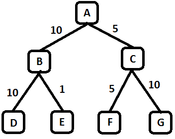
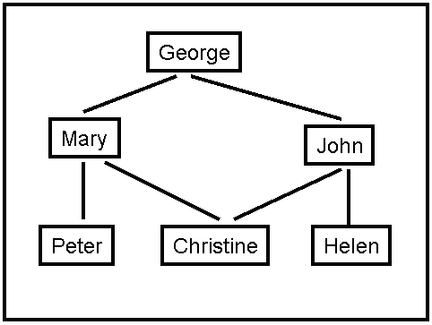
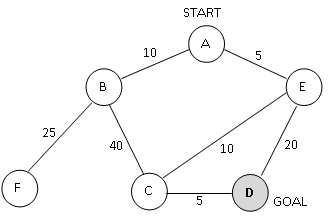

Assignment 1
Programming and Written Assignment - Uninformed Search & Informed Search
Task 1
Implement a search algorithm that can find a route between any two
cities. Your program will be called find_route, and will take exactly
three commandline arguments, as follows:
find_route input_filename origin_city
destination_city
An example command line is:
find_route input1.txt Munich Berlin
Argument input_filename
is the name of a text file such as input1.txt,
that describes road connections between cities in some part of the
world. For example, the road system described by file input1.txt can be
visualized in Figure 1 shown above. You can assume that the input file
is formatted in the same way as input1.txt:
each line contains three
items. The last line contains the items "END OF INPUT", and that is how
the program can detect that it has reached the end of the file. The
other lines of the file contain, in this order, a source city, a
destination city, and the length in kilometers of the road connecting
directly those two cities. Each city name will be a single word (for
example, we will use New_York instead of New York), consisting of upper
and lowercase letters and possibly underscores.
IMPORTANT NOTE:
MULTIPLE INPUT FILES WILL BE USED TO GRADE THE
ASSIGNMENT, FILE input1.txt
IS JUST AN EXAMPLE. YOUR CODE SHOULD WORK
WITH ANY INPUT FILE FORMATTED AS SPECIFIED ABOVE.
The program will compute a route between the origin city and the
destination city, and will print out both the length of the route and
the list of all cities that lie on that route. For example,
find_route input1.txt Bremen Frankfurt
should have the following:
distance: 455 km
route:
Bremen to Dortmund, 234 km
Dortmund to Frankfurt, 221 km
and
find_route input1.txt London Frankfurt
should have the following output:
distance: infinity
route:
none
For full credit, you should produce outputs identical in format to the
above two examples.
Suggestions
The code needs to run on omega. If you have not even tried
logging in on omega until the last day, there is a high probability
that something
will go wrong. You may find it convenient to do the code development
and testing on your own laptop or home machine, but it is highly
recommended that you log in to omega and compile a toy program ASAP,
and that you compile and run an intermediate version of your code well
before the deadline. Notify the instructor for any problems you may
have.
If you are planning on using Python, be aware that omega only supports
python 2.4.3. Please make sure to repeatedly test your code on omega
for compatibilty issues. You may find this anaconda environment
useful.
Pay close attention to all specifications on this page, including
specifications about output format, submission format. Even in cases
where the program works correctly, points will be taken off for
non-compliance with the instructions given on this page (such as a
different format for the program output, wrong compression format for
the submitted code, and so on). The reason is that non-compliance with
the instructions makes the grading process significantly (and
unnecessarily) more time consuming.
Grading
The programming part will be graded out of 50 points.
- 20 points: The program always finds a route between the
origin and the destination, as long as such a route exists.
- 15 points: The program
terminates and reports that no route can be found when indeed no route
exists that connects source and destination (e.g., if source is London
and destination is Berlin, in the above example).
- 15 points: In addition to the above requirements, the
program always returns optimal routes. In other words, no shorter route
exists than the one reported by the program.
- Negative points: penalty points will be awarded by the
instructor and
TA generously and at will, for issues such as: code not running on
omega, submission not including precise and accurate instructions for
how to run the code, wrong compression format for the submission, or
other failures to comply with the instructions given for this
assignment. Partial credit for incorrect solutions will be given ONLY
for code that is well designed and well documented.
Task 2
Max: [4308: 10 Points,
5360: 8 Points]
Consider the search tree shown in Figure 2. The number next to each
edge is the cost of the performing the action corresponding to that
edge. You start from the node A. The goal is the reach node G. List the
order in which nodes will be visited using:
- breadth-first search.
- depth-first search.
- iterative deepening search.
- uniform cost search.

Figure 2: Search Tree for Problem 1
Task 3
Max: [4308: 15 Points,
5360: 12 Points]
A social network graph (SNG) is a graph where each vertex is a
person and each edge represents an acquaintance. In other words, an SNG
is a graph showing who knows who. For example, in the graph shown on
Figure 3, George knows Mary and John, Mary knows Christine, Peter and
George, John knows Christine, Helen and George, Christine knows Mary
and John, Helen knows John, Peter knows Mary.
The degrees of separation measure how closely connected two people are
in the graph. For example, John has 0 degrees of separation from
himself, 1 degree of separation from Christine, 2 degrees of separation
from Mary, and 3 degrees of separation from Peter.
- From among general tree search using breadth-first search,
depth-first search,
iterative deepening search, and uniform cost search, which one(s)
guarantee finding the correct number of degrees of separation between
any two people in the graph?
- For the SNG shown in Figure 3, draw the
first three
levels of the search tree, with John as the starting point (the first
level of the tree is the root). Is there a one-to-one correspondence
between nodes in the search tree and vertices in the SNG (i.e. does
every node in the search tree correspond to a vertex in the SNG)? Why,
or why
not? In your answer here, you should assume that the search algorithm
does not try to avoid revisiting the same state.
- Draw an SNG containing exactly 5 people,
where at least
two people have 4 degrees of separation between them.
- Draw an SNG containing exactly 5 people,
where all
people have 1 degree of separation between them.
- CSE 5360 Only
(2 point EC for CSE 4308): In an implementation of
breadth-first tree
search for
finding degrees of separation, suppose that every node in the search
tree takes 1KB of memory. Suppose that the SNG contains one million
people. Outline (briefly but precisely) how to make sure that the
memory required to store search tree nodes will not exceed 1GB (the
correct answer can be described in one-two lines of text). In your
answer here you are free to enhance/modify the breadth-first search
implementation as you wish, as long as it remains breadth-first (a
modification that, for example, converts breadth-first search into
depth-first search or iterative deepening search is not
allowed).

Figure 3: A Social Network Graph
Task 4
Max: [4308: 15 Points,
5360: 12 Points]

Figure
4. A search graph showing states and costs of moving from one state to
another. Costs are undirected.
Consider
the search space shown in Figure 4. D is the only goal state. Costs are
undirected. For each of the following heuristics, determine if it is
admissible or not. For non-admissible heuristics, modify their values
as needed to make them admissible.
Heuristic 1:
h(A) = 5
h(B) = 40
h(C) = 10
h(D) = 0
h(E) = 10
h(F) = 0
Heuristic 2:
h(A) = 8
h(B) = 5
h(C) = 3
h(D) = 5
h(E) = 5
h(F) = 0
Heuristic 3:
h(A) = 35
h(B) = 30
h(C) = 20
h(D) = 0
h(E) = 0
h(F) = 50
Heuristic 4:
h(A) = 50
h(B) = 50
h(C) = 50
h(D) = 50
h(E) = 50
h(F) = 50
Heuristic
5:
h(A) = 0
h(B) = 0
h(C) = 0
h(D) = 0
h(E) = 0
h(F) = 0
Task 5
Max: [4308: 10 Points,
5360: 8 Points]
Consider
a search space, where each state can be a city, suburb, farmland, or
mountain. The goal is to reach any state that is a mountain. Here are
some rules on the
successors of different states:
- Successors of a city are always suburbs.
- Each city has at least one
suburb as a successor.
- Successors of a suburb can only be cities, or suburbs, or
farms.
- Each suburb has at least one city as a successor.
- Successors of a farm can only be farms, or suburbs, or
mountains.
- Each farm has at least one other farm as a successor.
- Successors of a mountain can only be farms.
Define the best admissible heuristic h you can define using only the
above information (you should not assume knowledge of any additional
information about the state space). By "best admissible" we mean that
h(n) is always the highest possible value we can give, while ensuring
that heuristic h is still admissible.
You should assume that every move from one state to another has cost
1.
Task 6 (Extra Credit for 4308, Required for 5360)
Max: [4308: 10 Points EC,
5360: 10 Points]
 Figure
4. An example of a start state (left) and the goal state (right) for
the 24-puzzle.
Figure
4. An example of a start state (left) and the goal state (right) for
the 24-puzzle.
The
24-puzzle is an extension of the 8-puzzle, where there are 24 pieces,
labeled with the numbers from 1 to 24, placed on a 5x5 grid. At each
move, a tile can move up, down, left, or right, but only if the
destination location is currently empty. For example, in the start
state shown above, there are three legal moves: the 12 can move down,
the 22 can move left, or the 19 can move right. The goal is to achieve
the goal state shown above. The cost of a solution is the number of
moves it takes to achieve that solution.
For
some initial states, the shortest solution is longer than 100 moves.
For all initial states, the shortest solution is at most 208 moves.
An
additional constraint is that, in any implementation, storing a search
node takes 1000 bytes, i.e., 1KB of memory.
Consider
general tree search using the stategies of
breadth-first search, depth-first search, iterative deepening search
and
uniform cost search.
(a):
Which (if any), among those methods, can guarantee that you will never
need more than 50KB of memory to store search nodes? Briefly justify
your answer.
(b):
Which (if any), among those methods, can guarantee that you will never
need more than 1200KB of memory to store search nodes? Briefly justify
your answer.
How to submit
For Programming part: Implementations in C, C++, Java, and Python will
be accepted. Points will be taken off
for failure to comply
with this requirement.
Create a ZIPPED
directory called assignment1_code_<net-id>.zip (no other
forms
of compression
accepted, contact the instructor or TA if you do not know how to
produce .zip files). The directory should contain source code.The
folder should also contain a file called readme.txt, which
should specify precisely:
- Name and UTA ID of the student.
- What programming language is used.
- How the code is structured.
- How to run the code, including very specific compilation
instructions,
if compilation is needed. Instructions such as "compile using g++" are
NOT considered specific.
- Insufficient or unclear instructions will be penalized by
up to 10
points.
- Code that
does not run on omega machines gets AT MOST 30 points.
For Written part:
- The answers can be typed as a document or handwritten and
scanned.
- Name files as
assignment1_written_<net-id>.<format>
- Accepted document formats .pdf. If you are using
Word, OpenOffice or LibreOffice, make sure
to
save as .pdf
- Please do not submit
.txt files.
- If
you are scanning handwritten documents make sure to scan it at a
minimum of 600dpi and save as a .pdf or .png file. Do not
insert images in word document and submit.
- If there are multiple files in your submission, zip them
together as assignment1_written_<net-id>.zip.
The assignment should be submitted via Blackboard.
Zip all the files for both the programming and written files together
into assignment1_<net-id>.zip and submit it.
Submission checklist
Is the code running on omega?
Does the submission include a readme.txt file, as specified?
Have scanned all the documents for the written section as specified?